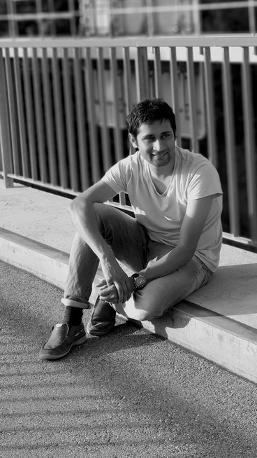
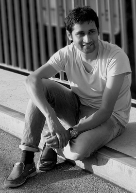
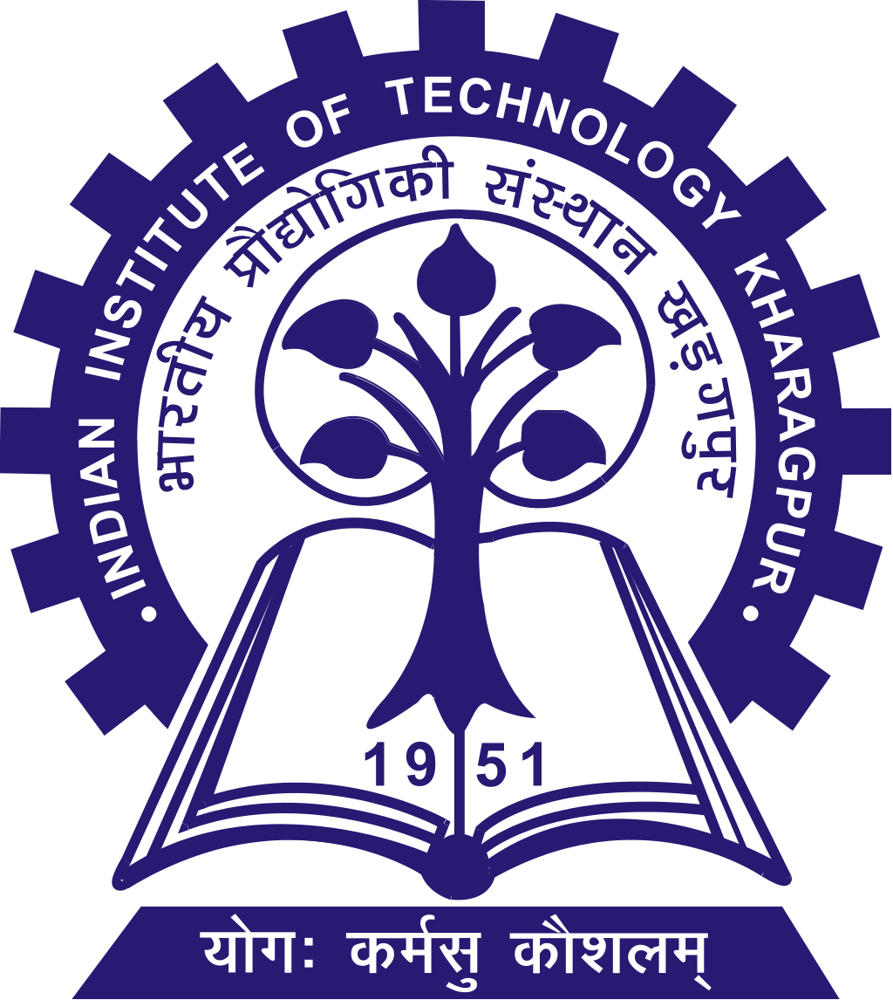
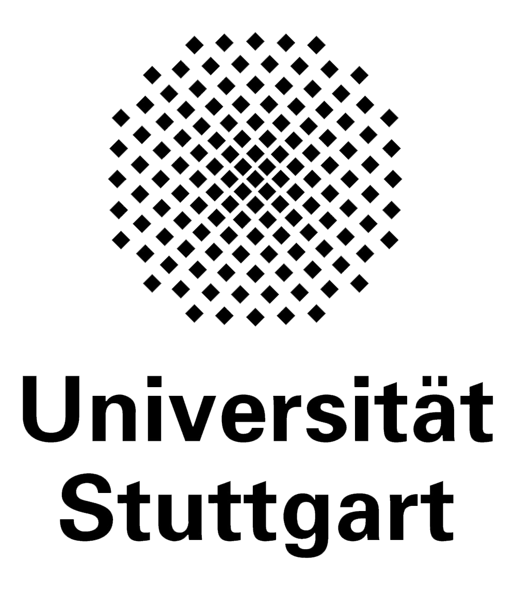
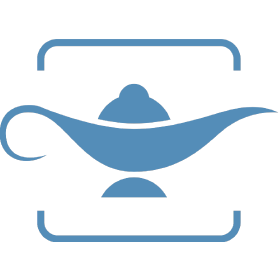
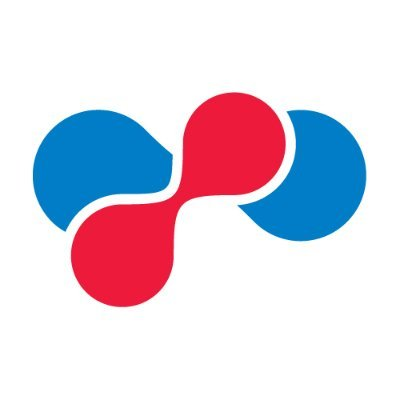
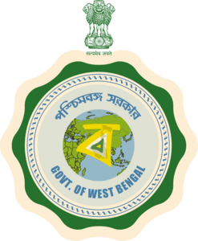

Assistant Professor·Computer Science & Engineering·IIT Kharagpur
Jibesh Patra.
I am an Assistant Professor in the Computer Science and Engineering department at the Indian Institute of Technology Kharagpur (IIT KGP), India. My research interest lies in the applications of Large Language Models (LLMs) on Software Engineering and Software Security problems. I completed my PhD from the University of Stuttgart, Germany on analyzing code corpora to improve the correctness and reliability of programs advised by Prof. Michael Pradel. During my PhD, I spent two wonderful summers interning at Microsoft Research Cambridge and Bangalore respectively.


Courses
- Autumn 2026CS60059Object-Oriented Systems
- Autumn 2026CS61065Theory and Applications of Blockchain
- Spring 2026CS20202Software Engineering
- Autumn 2025CS60059Object-Oriented Systems
Positions & Experience

IIT Kharagpur
Assistant Professor, Kharagpur, India
Honda Research Institute
Senior Scientist, Offenbach am Main, Germany
SAP SE
Senior Developer, Walldorf, Germany

University of Stuttgart
Research Assistant, Stuttgart, Germany
Microsoft Research
Jun. 2018 - Sep. 2018

Research Intern, Cambridge, United Kingdom
Microsoft Research
Research Intern, Bangalore, India
TU Darmstadt
Research Assistant, Darmstadt, Germany

Max Planck Institute for Software Systems
Intern, Kaiserslautern, Germany

Max Planck Institute for Heart and Lung Research
Intern, Bad Nauheim, Germany
Google Summer of Code
Intern, Remote

High School
Assistant Teacher, Bud Bud, India
Wipro Technologies
Project Engineer, Hyderabad, India
Professional Activities
2026
2025
2024
- TOSEM 2024 — Research Paper — Reviewer
- FSE 2025 — Poster Track — Program Committee
- CAIN 2025 — Industry Track — Program Committee
2016
Education
Ph.D.
University of Stuttgart, Germany — 2021
M.Tech.
National Institute of Technology Durgapur, India — 2013
B.Tech.
West Bengal University of Technology, India — 2009